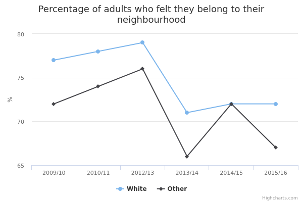

Sense of belonging to your neighbourhood
The main facts and figures show that:
-
in 2015/16, the survey found that 72% of White people felt strongly that they belonged to their neighbourhood, compared to 67% of people from ethnic minorities – but the sample size was small
-
in 2009/10, the sample size was considerably larger and the survey found 77% of White people felt strongly that they belonged to their neighbourhood, compared to 72% of people from ethnic minorities
-
survey results in more recent years (including 2015/16) should be treated with caution because the number of respondents, particularly those from ethnic minority groups, was too small to draw firm conclusions
Things you need to know
Caution should be used when interpreting the results, as they are subject to a degree of uncertainty. This is because they are survey estimates based on a sample of the population.
Estimates based on a larger number of respondents are more reliable. Therefore, the smaller numbers of respondents from ethnic minority backgrounds mean that estimates for these groups are less reliable than estimates for White people.
In 2009/10, the number of people surveyed made it possible to draw firm conclusions about the differences in sense of neighbourhood belonging between White British and ethnic minority groups, when those groups are combined.
Subsequent surveys had smaller samples, particularly from 2014/15 and 2015/15, so it’s not possible to draw firm conclusions about observed differences between the ethnic groups surveyed.
For the same reason, observed changes over time may not reflect real differences, so caution is needed when interpreting trends in the data.
Up until 2010/11, the data was collected through the Citizenship Survey, but from 2012/13 onwards it was collected through the Community Life Survey.
What the data measures
The government’s Community Life Survey was established to monitor levels of community cohesion and engagement. The survey asked respondents how strongly they feel they belong to their immediate neighbourhood.
Respondents who answered 'fairly strongly' or 'very strongly' are described here as having a strong sense of belonging to their neighbourhood.
In 2011/12, the survey wasn’t run, so data for this year is missing.
Why these ethnic categories were chosen
This data is divided into 2 ethnic categories, White and Other: White ethnic groups (including White British and White ethnic minorities) compared with all other ethnic minorities.
The small sample size for the Community Life Survey means that is it only possible to provide a breakdown for these two broad ethnic categories. There may be differences between ethnic minorities, but it is not possible to explore this with the sample size currently available.
Sense of neighbourhood belonging by ethnicity

View the numbers in a table
| 2009/10 | 2010/11 | 2012/13 | 2013/14 | 2014/15 | 2015/16 | |||||||
| White | 77 | 7,872 | 78 | 8,651 | 79 | 6,202 | 71 | 4,513 | 72 | 1,782 | 72 | 2,653 |
|---|---|---|---|---|---|---|---|---|---|---|---|---|
| non-white | 72 | 790 | 74 | 955 | 76 | 676 | 66 | 560 | 72 | 231 | 67 | 354 |
| All | 76 | 8,664 | 78 | 9,608 | 78 | 6,886 | 70 | 5,078 | 72 | 2,014 | 71 | 3,012 |
Summary
-
as the numbers in the table show, the 2015-16 survey achieved a sample size of 3,012 individuals – too small to allow firm conclusions to be drawn about differences between ethnic groups
-
the sample size was larger in earlier years, the largest being 8,664 in 2009/10 and 9,608 in 2010/11
-
for this reason, we can say with reliability that in 2009/10, White people were more likely to feel a sense of belonging to their neighbourhood than people from an ethnic minority group, and in 2010/11 there was no difference between the groups
Download image and data
Methodology and data type
Purpose Of Data Source
The government’s Community Life Survey was established to monitor levels of community cohesion and engagement.
The Community Life Survey is designed to track the latest trends and developments across areas that are key to encouraging social action and empowering communities, such as volunteering and charitable giving.
Methodology
The Community Life Survey is a survey of households in England carried out via face-to-face interviews. In 2016/17, the survey moved from face-to-face to online data collection.
Each year, the sample data was weighted to take account of non-responders to be representative of the population of England.
The sample size was increased for the 2016/17 survey and included a larger sample of ethnic minority respondents to produce more reliable results for this population.
Therefore, more detailed and robust results should be available when the 2016/17 survey results are published at the end of July 2017.
Data type
Survey
Type of statistic
Official Statistics
Disclosure control
We do not publish results based on fewer than 30 respondents. All the results presented here are based on sample sizes of over 200 respondents.
Further technical information
Data source details
-
Department of Culture, Media and Sport
-
22 July 2010
-
20 July 2016
-
July 2017
-
Annual